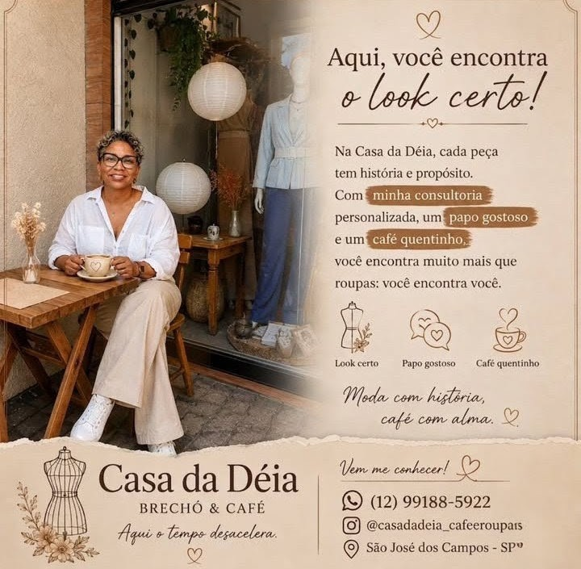
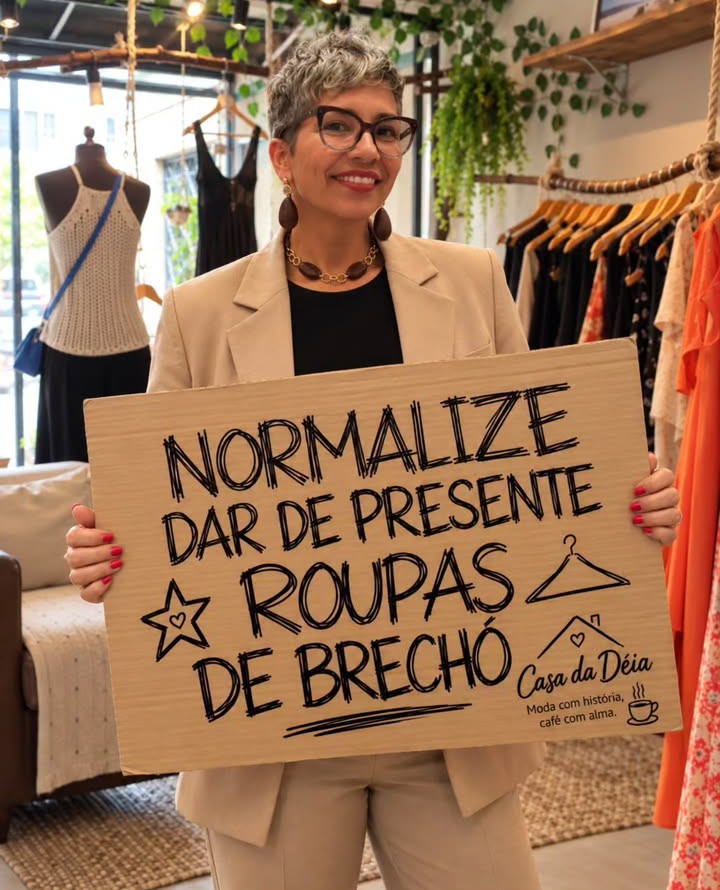

Novidades do brechó em breve
👗 O Brechó
Novidades do brechó
Em breve, vídeos com peças novas, achadinhos e muito mais.
Acompanhe no Instagram💞Garimpo de estilo & Café com afeto 💞
👠 Moda com história, ☕ café com alma • ⏳ Aqui o tempo desacelera.
Acesse nossa loja online e encontre sua próxima peça favorita!Roupas, sapatos, bolsas e perfumes cuidadosamente selecionados para transformar o seu dia com charme e autenticidade.
Um espaço criado para você desacelerar. Aqui na Casa da Déia, você encontra araras repletas de roupas garimpadas com muito carinho e, ao mesmo tempo, desfruta de um café especial fresquinho.

Um cantinho acolhedor para você saborear o momento enquanto garimpa suas peças favoritas.

Peças únicas, vintage e contemporâneas selecionadas a dedo. Venha provar seu look favorito tomando um bom café!
Uma peça bem escolhida traz confiança, autoestima e felicidade para o dia a dia. Aqui na Casa da Déia, cada look é pensado para você se sentir bem e linda do começo ao fim.
Acompanhe novidades, bastidores e atualizações da loja.
Novidades do brechó em breve
Em breve, vídeos com peças novas, achadinhos e muito mais.
Acompanhe no InstagramBastidores da cafeteria em breve
Um gostinho do nosso café, dos preparos e dos momentos especiais por aqui.
Acompanhe no InstagramAtualizações da loja em breve
Novidades, horários especiais e tudo o que acontece na Casa da Déia.
Acompanhe no Instagram